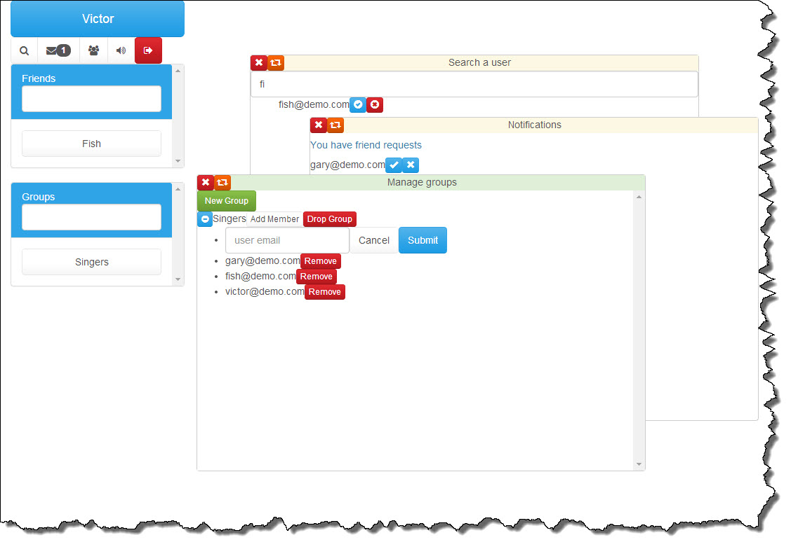
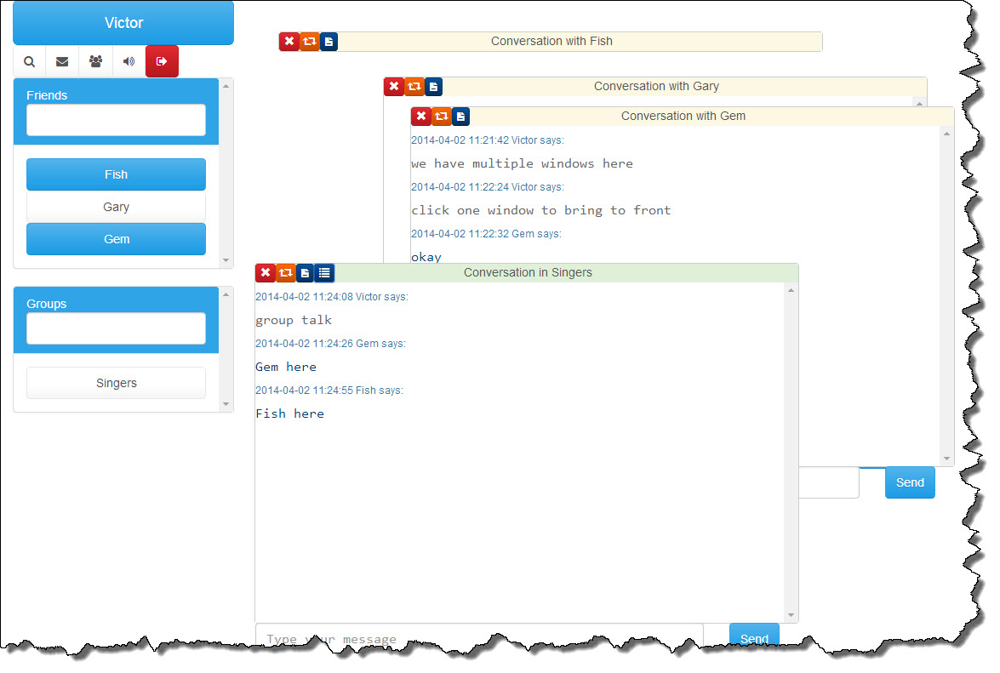

webchatter
Web chat app for your local net work
Screenshots
 Usage
It is built on top of Node.js and MongoDB, you need to install them before moving on.
Then, change into directory 'webchatter/', and run the following command to set up dependencies,
$ npm install
Then, run the app
$ node app
Notes
By default, it listens on port 8000, modify file app.js if you want to change it.
By default, it uses a database called 'webchatter', modify file mongodb/index.js if you want to change it.